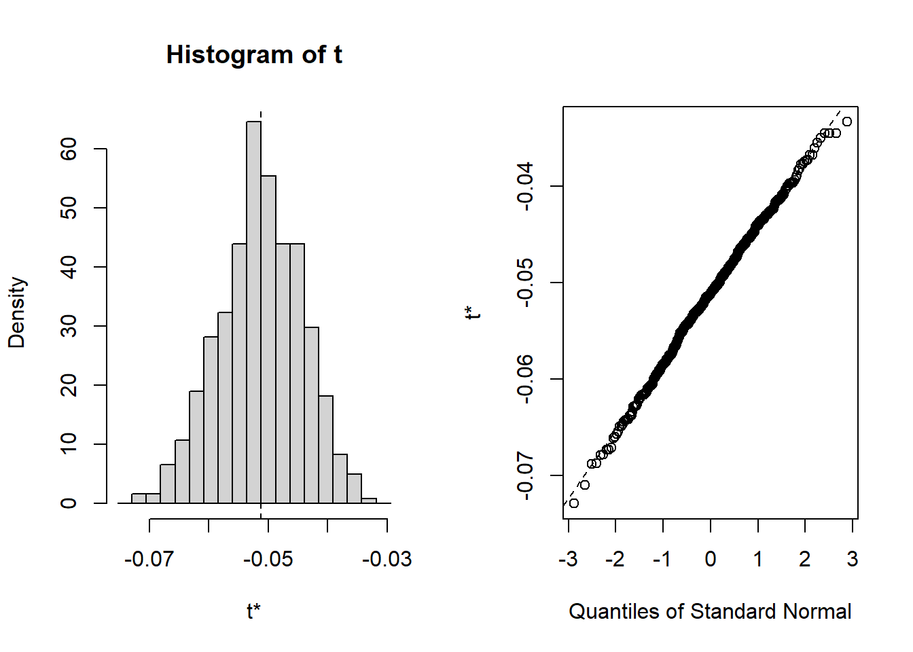

16 Bootstrap
Bootstrap can be used to
estimate confidence intervals
test hypothesis
eliminate bias
Steps:
- Sample data (\(x_1, \dots, x_n\)) from a distribution \(\mathcal{F}\)
- Compute statistical quantity of interest \(u\) from the sample (e.g., mean, median, coefficient, etc.)
- Sample \(x_1^*, \dots, x^*_n\) with replacement from the sample, which gives you the empirical distribution \(\mathcal{F}^*\)
- Repeat the process for \(n\) times
- Compute \(u^*\) the statistical quantity of interest for each iteration.
In principle, the empirical distribution from bootstrap \(\mathcal{F}^*\) should approximate the distribution of the sample data \(\mathcal{F}\). And the variation in the sample statistical quantity of interest \(u\) can be approximated by the variation in \(u^*\)
library(boot)
data("acme")
# create your function to calculate the statistic of interest
bt_f <- function(d, i){
d2 <- d[i,]
return(mean(d2$market))
}
set.seed(1)
bootstat <- boot(data = acme,
statistic = bt_f, # function to calculate the statistic of interest
R = 500) # number of replicates
# summary(bootstat)
# bias
mean(bootstat$t) - bootstat$t0
#> [1] -0.0001048293
# standard error
sd(bootstat$t)
#> [1] 0.007018217
# confidence intervals
boot.ci(boot.out = bootstat, type = "all")
#> BOOTSTRAP CONFIDENCE INTERVAL CALCULATIONS
#> Based on 500 bootstrap replicates
#>
#> CALL :
#> boot.ci(boot.out = bootstat, type = "all")
#>
#> Intervals :
#> Level Normal Basic
#> 95% (-0.0648, -0.0373 ) (-0.0647, -0.0368 )
#>
#> Level Percentile BCa
#> 95% (-0.0656, -0.0376 ) (-0.0660, -0.0378 )
#> Calculations and Intervals on Original Scale
plot(bootstat)
Note: results from boot() include
t0the point estimate for \(k\) statistics of interest applied to the whole sample datasettis an \(R \times k\) matrix where \(R\) is a bootstrap replicate and \(k\) is the statistic of interest.
Bootstrap types for confidence intervals
| Type | Method | Use when statistic is |
|---|---|---|
norm |
Normal boostrap | unbiased and normally distributed |
basic |
Basic bootstrap (Hall’s method) | unbiased and homoskedastic |
stud |
Studentized bootstrap | homoskedastic |
perc |
Percentile bootstrap (Quantile-based) | unbiased and homoskedastic |
bca |
Bias Corrected Accelerated bootstrap | statistic can be transformed to a normal distribution and the transformed version has a constant bias. |